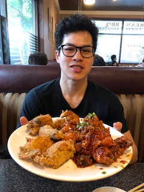

Fried chicken is one of my favorite things to eat! It's also the very first food I learned how to cook on my own.
Here I am sharing a platter of fried chicken from Stone Korean restaurant in Redmond.
Twice-fried so it's extra crispy. Korean fried chicken also owes its spicy kick to gochujang sauce.
Thse fried chicken bites are topped with salt, pepper, and chilli powder and typically served from street carts.
In this version, morsels of chicken are first marinated in soy sauce and other seasonings, then deep fried in potato starch, providing a light tempura like texture.
Europeans have a documented history of frying chickens as far back as the Middle Ages. But it was the Scots, specifically, who preferred to deep-fry their chickens in fat.
If there is one food that I am genuinely passionate about, it's pizza! I like to eat it, make it, and talk about it.


Photos from Papi's Pizzeria